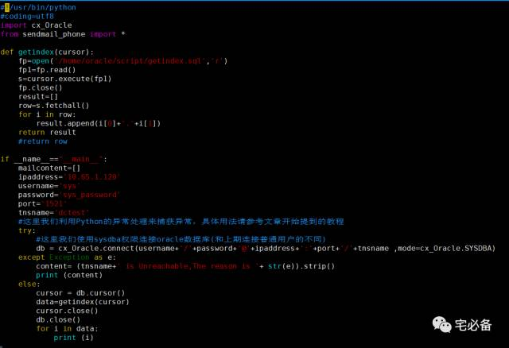
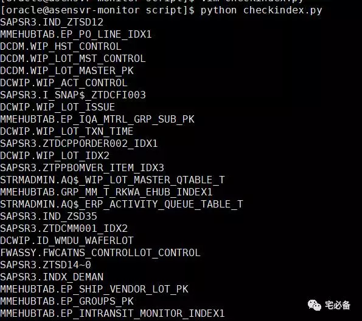

使用Python获取Oracle索引信息
这个专题讲述如何讲这些监控数据保存在MySQL中为日后所用
上节讲到建立一个MySQL数据库并新建一张用于存放索引信息的表
今天讲如何获取Oracle已使用过的索引名称
环境设置
Linux系统为 Centos 6.8
Python环境为 Python 3.6
MySQL版本 MySQL 5.7 (GA)
连接Oracle模块:cx_Oracle
连接MySQL模块:PyMySQL
捞取原理
由于我们的执行计划都存在v$sql_plan中，所以我们定期从这个视图中获取索引信息，经过一段时间的积累即可知道哪些索引没被使用过
新建获取索引信息的语句
新建 getindex.sql文件，这里我们从v$sql_plan视图中获取已使用过的索引名称
select DISTINCT OBJECT_OWNER, OBJECT_NAME
from v$sql_plan
where operation = 'INDEX'
AND OBJECT_OwnER NOT IN ('SYS',
'XDB',
'SYSTEM',
'ORDSYS',
'MDSYS',
'OUTLN',
'TSMSYS',
'DBSNMP',
'WMSYS',
'EXFSYS',
'SYSMAN',
'CTXSYS',
'OLAPSYS',
'FLOWS_FILES',
'APEX_030200',
'WKSYS',
'SH',
'QUEST',
'QS_WS',
'QS_OS',
'QS_CS',
'QS_CBADM',
'QS',
'PM',
'PERFSTAT',
'OE',
'ODM',
'HR',
'QS_ES',
'SCOTT')
获取已使用的索引
该脚本获取所有在视图中的索引并把结果存放在一个list(列表)中
脚本名称为 checkindex.py

运行结果

可以看到已经从v$sql_plan视图中获取到了已使用过的索引的名称
源码位置
代码请查看我的Github主页
https://github.com/bsbforever/wechat_oms
至此我们已经学会了如何利用Python获取oracle已使用过的索引名称
下节我们讲如何把结果放到MySQL数据库中